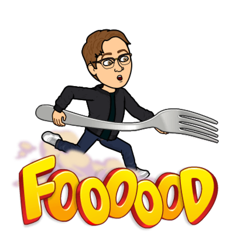

Coding, Reading, Eating, and Music
Coding
I am a graduate of Fullstack Academy’s Web Development Bootcamp.
I have several years of experience in the field of education.
I am currently looking to make the transition to software engineering.
Reading
I like to read! I read whenever I can. I first got into reading at the end of high school.
I like pretty much any genre.
Eating
When it comes to food, I value both quantity AND quality.
- No one favorite cuisine, because variety is the spice of life.
- Can always go for fast food.
- Will try most foods.
- Would like to be able to cook, it's on the New Year's Resolutions list.
Music
I love listening to music and seeing live music. Currently trying to learn the piano.